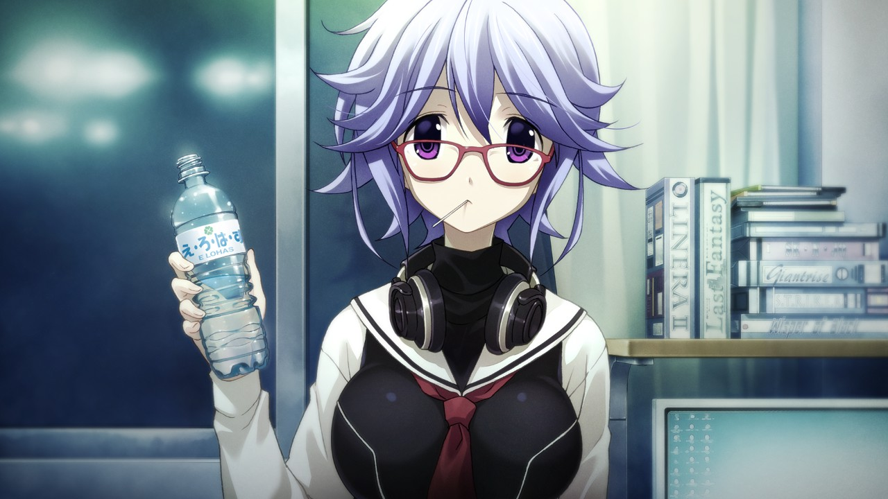
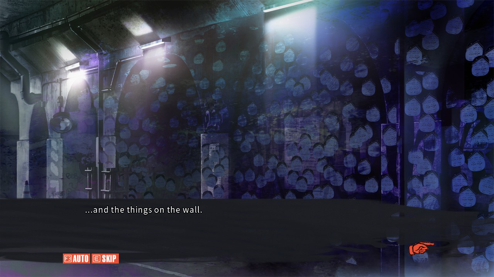
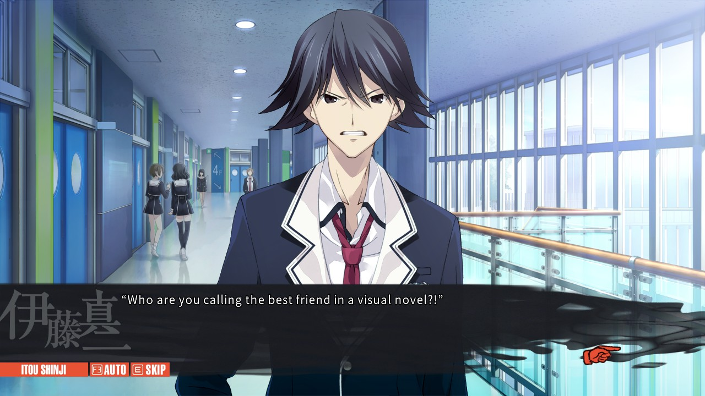

Chaos;Child, of the SciAdv series by MAGES, is a dread-inducing romp through an alternate Shibuya, in which you're never quite sure how much of what's being said or being shown is real. It centers around Takuru Miyashiro, who is a student at a private academy in the city, following a series of tragic events in which his life was uprooted and his family died. Living on his own and shunning his classmates as "wrong-siders" (those on the wrong side of the informational divide, essentially people who don't care that they don't know things), his need to do something important drags him into a world he's not quite prepared for as he investigates a series of strange and impossible murders. Alongside his classmates, he embarks on a series of strange, horrific, and thought-provoking investigations into crime scenes, the appearance of the Sumo Stickers, and the seemingly intentional connection to the New Generation Madness six years earlier (from Chaos;Head). This all comes to a head as Takuru discovers Gigalomania, the ability to change reality to fit one's perception, and begins to believe he is the only one that can solve the crime.

Chaos;Child is a visual novel, so mechanically you'd think there's not a lot to think about, but the decision system in this game is interesting enough that I've taken major inspiration from it in my own work. Rather than direct dialogue options, Chaos;Child (like its predecessor) uses the Delusion Trigger system, in which the player subtly alters Takuru's reality with his latent Gigalomania by shifting his delusions in either a positive (sexually charged, uplifting, or power fantasy) or negative (devastating, embarassing, or horrific) direction, or if nothing is chosen, he deludes as normal. However, the player is never quite told that this is shifting the story, and the changes made by any individual decision can be hard to spot, a fantastic and near-seamless way to ensure that while major events still take place, the player is still guiding the story. It's a difficult way to write a story if you want it to remain hard-to-spot, but ultimately is pulled off perfectly in this entry, unlike what I would think of Chaos;Head. My only major complaints are that several delusions are outright uncomfortable to sit through, but that might be because I am asexual, and that during your first playthrough, none of the Delusion Triggers matter. Your first time playing the game, you are locked into a route so that you see the baseline version of events, which is extremely important to understanding the overarching narrative, but it does mean you have no influence on the story. All in all, mechanically, I think this is a slam dunk, one of the best ways to design decisionmaking in a visual novel, period.
Visually and audibly, this game is incredible. The deaths are gory and upsetting in the right way, starting from the very first scenes. The use of blur, warping, and other effects is masterful and leaves nothing to be desired. The character designs are all memorable, if standard anime fare. The design of the Di-Swords are incredibly cool as well, a major set up from those in Chaos;Head. The backgrounds are numerous and beautiful, and yet a bit lonely without the interaction of the leyman. Voice acting in this game is extremely above average, no character is mistakable for another, and everyone's voice fits their personality to a T. While the soundtrack to this game is mostly background and ambiance, there are some standout tracks that this game would feel much worse without. However, the most incredible part of this game from an artistic standpoint is the sound design. Every sound effect, every mix of voice acting, every little thing is intentionally placed to make the experience as visceral and personal as possible, and I cannot sing the praises enough. You'll know once you've beaten the game the first time exactly what I mean.

Chaos;Child's main theme is, in my opinion, the burdens of family and parenthood. The name makes that obvious, but it goes so much deeper than you'd otherwise expect. Takuru struggles to maintain a relationship with his newfound family of orphans, because he feels they don't respect him. Nono Kurusu, his adoptive sister, feels the burden of essentially parenting her family, despite having an adoptive father, and attempting to keep them together. The New Generation Madness had multiple instances of parents and children as victims or themes, and as a sort of twisted homunculus baby in its own way, The Return of New Generation Madness, too, bears the same traits, but due to the death of the parent before the child comes to head, they lack the same adherence to the message, intentionally on the writers' parts. These, combined with the number of orphaned children and the lack of any real parental figures in the story make parent issues a main focus, but I would argue the real message is about the burdens of creating something and having that thing take life of its own. I won't get into major spoilers for the plot of the game, here, because I think you should play it, but I will point out a few points. At multiple points, the naming convention of the Return of NewGen (and NewGen proper) is brought up as being intentionally lighthearted as the @chan threads connecting the murders are initially spawned, but become cruel and distasteful as the events continue and more people pick up on it. The Sumo Stickers go from being something important but not relevant to the average person, to being their own religion, to being so much more. The power of creation is one we take lightly and yet it is the power to truly control our creations that eludes us, and is the thing we as artists desire. You'll find this reflected in the game's story in spades as it continues, even in places you wouldn't otherwise expect.

As a closing section, I loved this game. I think it is, possibly, the perfect Visual Novel. The Delusion Trigger system is perfect for telling the story that is being told. The amount of death, blood, and gore is appropriate for the genre, and while many scenes are upsetting, they are necessary to the story. As a major content warning, this game involves scenes with suicidal ideation and child death, and I would not blame you if you're not in a place to handle those things. However, I believe that the story would be worse without them, and the ride you're being taken on from the start until the end of the final ending is worth all the pain you endure. Pick it up if you can, it's always worth it. I give Chaos;Child a 9.8/10.